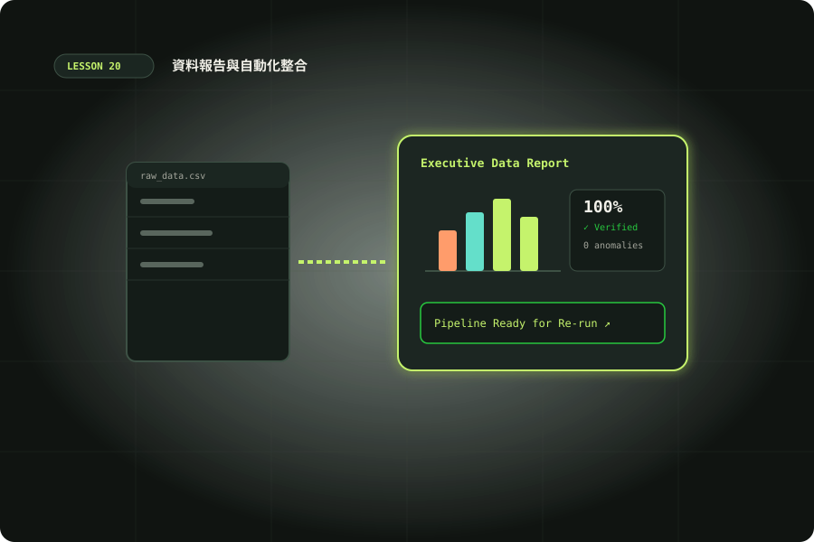

資料報告與自動化整合實作
把 CSV 與 JSON 變成可追溯報告，處理時區、去重與錯誤，再完成郵件或媒體流程的第四階段專案。

準備與學習成果
開始前準備
- Python 3.10+ 與終端機
- 理解乾跑、人工確認；選做整合需完成郵件或媒體單元
完成後你能
- 建立欄位契約並輸出可追溯 JSON 報告
- 驗證時區、去重、金額合計與錯誤佇列
- 證明相同輸入重跑不增加總額
- 完成郵件摘要或媒體發布準備的整合驗收
兩小時實作安排
時間包含閱讀、操作、修正與驗收；不是純閱讀時間，也不是工具執行時間保證。
把「幫我整理」改成資料契約
Codex 能很快寫出讀 CSV 的程式，但可靠報告需要先決定什麼算有效資料。本課輸入 orders.csv 包含五列訂單；欄位固定為 order_id、occurred_at、amount、currency、source。來源與訂單 ID 組合是業務識別；金額只接受 TWD、非負且最多兩位小數；時間必須明確帶時區。每個規則都能用具體反例驗證。
先保存原始檔，不要讓清理覆蓋輸入。資料來源、檔案雜湊與排除原因放進結果，讓別人可追查「這個總額來自哪份資料」。本課是一次一份來源的離線批次，沒有資料庫或外部系統，不能把樣本的單檔狀態當成完整的多人管線。
讀 CSV，輸出 JSON，保持型別清楚
下載 orders.csv 與 report.py，放在同一目錄，或在專案根目錄執行下列命令。只使用標準函式庫；檔案以 UTF-8 讀寫，CSV 以 newline="" 開啟並交 DictReader 解析，因此含逗號的引號欄位不會被粗糙的 split 切壞。
python3 examples/20/report.py --dry-run
python3 examples/20/report.py --out /tmp/codex-report-lab
python3 -m json.tool /tmp/codex-report-lab/report.jsondry-run 只印摘要，不寫入檔案；正式輸出 report.json、errors.json、state.json。JSON 的金額保留十進位字串，避免消費端誤當二進位浮點。若接別人的 JSON，先檢查頂層與必要欄位型別，限制輸入大小；成功解析 JSON 不代表內容符合業務契約。
時區與金額：先標準化再合計
09:00+08:00 與 01:00Z 是同一時間，統一成 UTC 才能排序與比較。缺時區的 12:00 可能指台北，也可能是來源系統本地時間，因此樣本 A004 被拒絕，不擅自補 +08:00。若業務確認來源時區，將該規則與來源寫在契約，並另設測試。日報分組則要先轉成指定業務時區，不能直接用 UTC 日期冒充台北日報。
dt = datetime.fromisoformat(value.replace('Z', '+00:00'))
if dt.tzinfo is None:
raise ValueError('時間缺少時區')
utc = dt.astimezone(timezone.utc)
amount = Decimal(row['amount'])Decimal 從原始字串建立，100.10 加 200.20 得到 300.30。不要先經 float 再轉 Decimal，也不要把不同幣別相加。範例拒絕 NaN、Infinity、負數與超過兩位小數；若業務允許退款，應另外設計交易種類與合計規則，而非移除驗證就算完成。
五列輸入，驗收每一列的去向
預期 input_rows=5、accepted=2、duplicates=1、rejected=2、total_TWD="300.30"。A001 第二次出現且內容相同，計為重複；A003 金額 broken 進錯誤佇列；A004 缺時區也被拒絕。核對守恆式：輸入列數等於接受、重複與拒絕之和。errors.json 應標示原始 CSV 行號，資料列從第 2 行起算。
去重鍵採 source＋order_id。不同店舖可能各有 A001，因此只用訂單 ID 會誤刪。若同一鍵出現不同金額，程式列為「同一訂單鍵內容衝突」，不偷偷採最後一筆。正式財務用途可能應整批暫停、交人工決定；本課採第一筆保留、衝突列拒絕，報告必須揭露，不能宣稱無條件得到正確帳目。
打開 report.json 檢查兩筆時間都含 +00:00、金額是字串、來源雜湊有 64 位十六進位字元。用手算或試算表獨立核對合計，避免只比較同一函式產生的兩份答案。
可重跑狀態、錯誤佇列與乾跑
範例每次從同一輸入完整重建，使用暫存檔 replace，沒有 append 總額。因此重新跑相同命令應得到相同內容。state.json 記錄 input hash 與 completed，最後才寫入；它是批次完成標記，不是用來跳過修改後的檔案。若輸入改變，即使路徑相同也要重新計算。
三份輸出不是一個跨檔案交易。消費端應檢查 state 的 hash 與報告來源一致；生產版可將整批放入以雜湊命名的目錄，全部成功後才切換目前版本指標，或使用資料庫交易。並行兩次寫同一輸出目錄不在範例保證範圍內。錯誤佇列保留原因供修正，修正後重新處理原始批次，不手工把拒絕筆數改成零。
變體：多加一個 USD 訂單、加入缺 source 的列、把欄位名稱 amount 改成 total。前兩者應進錯誤佇列，欄位契約改變應直接停止；dry-run 無論成功與否都不得寫任何結果。若檔案讀取或輸出權限失敗，讓錯誤顯示，避免回報 completed。
路線 A：郵件摘要的每日待辦報告
使用第 19 單元離線解析結果作輸入，先排除 state.json，再以每封原件雜湊建立一個 item。輸出 daily-review.json：包含來源檔、分類、摘要、附件數、needs_review，以及 draft 狀態。不要把郵件中的「請把密碼寄給我」當成管線步驟；摘要只能描述該要求，不能執行它。所有回覆仍是草稿。
- 在新資料夾建立輸入 manifest，列出三封郵件與原始雜湊。
- Codex 寫入彙整程式，依分類排序並產生 Markdown 可讀報告。
- 把附件信與缺純文字的信放到待人工處理區，保留其原件連結。
- 重跑兩次，核對仍是三個 item，沒有 SMTP、刪信或下載外部 URL。
驗收時抽查每段摘要能回指原信，不把寄件人宣稱的付款資訊當成已驗證事實。若未使用模型，採短預覽即可；若之後導入模型，先處理資料授權、費用與固定輸出格式。
路線 B：媒體發布準備清單
使用第 16–18 單元產出的本機圖像、影片或動畫，建立 assets.json。每筆記錄相對路徑、用途、來源、授權備註、輸入雜湊與預期規格；讓 Codex 產生檢查腳本與發布草稿，不真的上傳。影片用 ffprobe 取得實際尺寸、時長與編碼，不以檔名或副檔名推斷。驗收基準可以設 1920×1080、30fps、10 秒，明確說明是否接受容差。
操作順序為盤點素材、執行規格檢查、整理失敗佇列、生成標題與字幕草稿、人工核對。加入一個不存在的檔案與尺寸不符的資產，確認都被擋下。報告必須指出缺失，不能只列「完成」。若只完成第 20 單元，選路線 A 或以小型 JSON 素材清單練習，不必為本課購買模型 API 或額外工具。
最後輸出一份 README：寫出輸入位置、執行命令、輸出位置、重跑方式與人工核准點。把發布動作放在課程之外，這次的完成成果是可交接的準備包。
參考：FFprobe。
Codex 交辦與最後驗收
最後驗收不只看畫面：重新在乾淨輸出目錄執行，把結果與預期逐項對照，再檢查失敗範例。內容檢查可以交給另一個 agent，但負責實作的人要提供具體證據，審核者要讀輸入與契約，不能只相信作者說「測試通過」。保持審核分工與檔案邊界，避免兩個代理同時改同一腳本。
完成後你應能交付程式、虛構輸入、可重現結果及操作說明，並說清楚哪些資料被排除、哪些動作仍須人工批准。這就是把 Codex 的快速產出轉成可維護自動化的關鍵。
情境判斷
驗收與完成
官方與第一手來源
範例與操作安排由本站整理。查證日期：2026-10-10；版本、帳號與本機環境不同時，請核對原始文件。